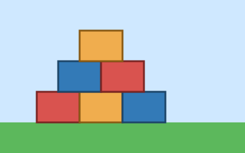
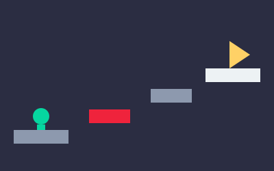

Meu Mundo Roblox
Bem-vindo ao meu site sobre o Roblox, uma plataforma onde qualquer pessoa pode jogar e também criar os próprios jogos.
O que é o Roblox
O Roblox é uma plataforma on-line com milhões de experiências feitas pela própria comunidade. Cada jogador tem um avatar e pode entrar em mundos de corrida, aventura, construção e muito mais.
Como criar uma experiência
Para criar, usa-se o programa gratuito Roblox Studio. Nele, os mundos são montados com blocos e os comportamentos são programados na linguagem Luau.

Por que eu gosto
Gosto do Roblox porque ele junta diversão com criatividade. Aqui estão os passos que eu sigo quando começo um projeto novo:
- Pensar em uma ideia de jogo.
- Desenhar o mapa no papel.
- Construir o cenário no Roblox Studio.
- Testar com os amigos e ajustar.
E estes são os tipos de experiência que eu mais curto:
- Obbies, que são percursos de obstáculos.
- Jogos de aventura
- Com missões e histórias.
- Com chefes para derrotar.
- Simuladores de construção.
- Jogos de corrida.

Continue navegando
Quer aprender mais? Veja a página Sobre o Roblox. Quer participar de algo? Faça sua inscrição no campeonato de construção.